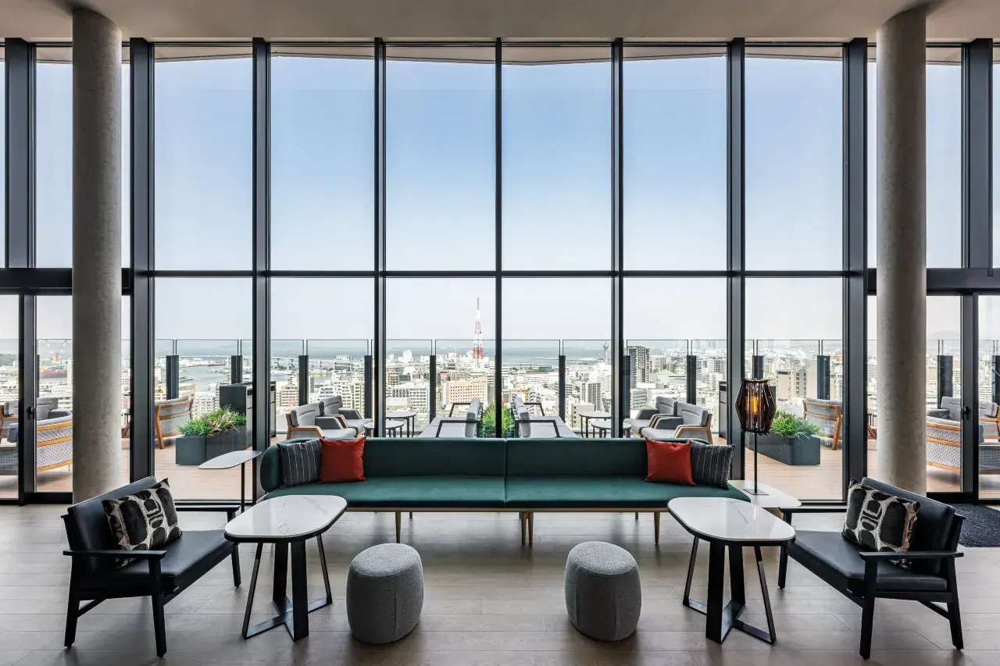
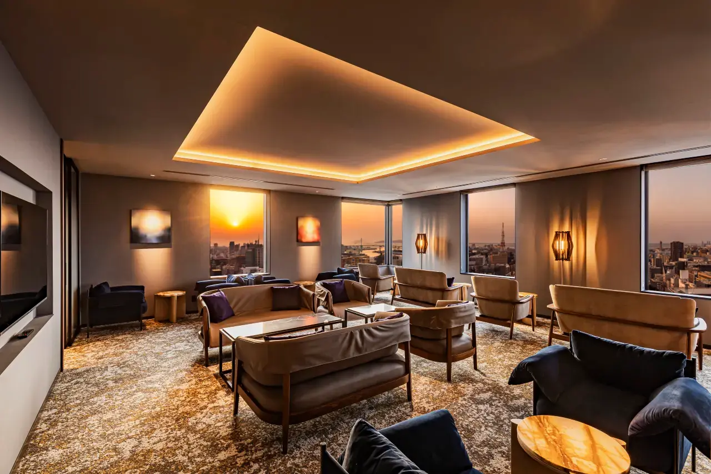
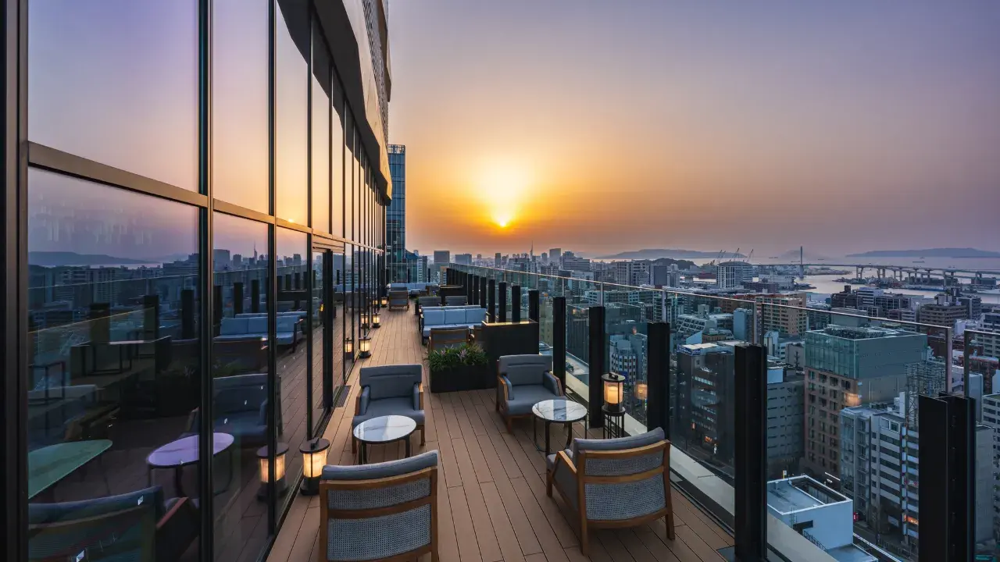
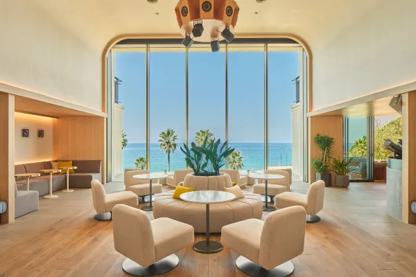
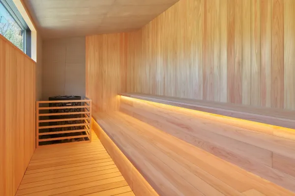

第 1–2 晚
THE GATE HOTEL FUKUOKA by HULIC
福岡市・博多
坐落博多核心、緊鄰中洲與運河城，精品設計與絕佳地段，逛街、美食、交通一步到位。（飯店介紹可再補充）
博多市區精品飯店與糸島海濱別墅各兩晚，揉合城市風味、海岸風光與一場酣暢的高爾夫。全程私人包團，為您與家人量身安排節奏。
福岡位於九州北端，是通往日本西部的門戶。市區的博多繁華便利，車程約 40 分鐘的糸島則有綿延海岸與海濱別墅。這趟行程在兩地各住兩晚，城市與海景兼得。



福岡市・博多
坐落博多核心、緊鄰中洲與運河城，精品設計與絕佳地段，逛街、美食、交通一步到位。（飯店介紹可再補充）


糸島・海濱別墅
糸島海岸線上的私人別墅式住宿，面海、靜謐、適合放慢步調，享受私人空間與海景。（飯店介紹可再補充）

雷山山麓的丘陵名門，18 洞 6,830 碼 par 72，綠意環抱、遠眺糸島平原。鄰近福岡機場與博多、交通便利，全程附桿弟。

名家赤星四郎設計的經典球場，丘陵起伏豐富、講究力量與技巧，鄰近志摩芥屋海岸，挑戰性十足。


福岡・赤坂 主廚割烹
東京米其林星級「鮨 將司」延伸的隱密名店，依當日食材即席呈現的高級壽司與割烹料理，是這趟旅程的味覺亮點。兩晚晚餐皆於此享用。
抵達福岡，前往門司港走走。漫步懷舊港町，欣賞大正浪漫風情的紅磚建築與海濱景致，為旅程揭開序章。
先生們前往球場揮桿；太太們遊覽水鄉柳川，搭乘傳統川舟悠遊運河、品嚐名物鰻魚蒸籠飯，享受悠然的水都時光。
先生們再戰球場；太太們搭渡輪前往能古島海島公園（自福岡市約 10 分鐘船程），秋季大片波斯菊與蔚藍海景交織，是必訪的賞花勝地。傍晚移居糸島海濱別墅。
糸島深度遊。搭乘觀光船一覽芥屋大門——日本三大玄武岩海蝕洞之一，巨岩與碧海交織的壯麗景觀；再走訪雷山千如寺大悲王院賞楓，境內樹齡約 400 年的巨楓，古剎與紅葉相映、禪意盎然。
於別墅享用早餐，依航班時間整裝賦歸，或為您延續下一段日本旅程。